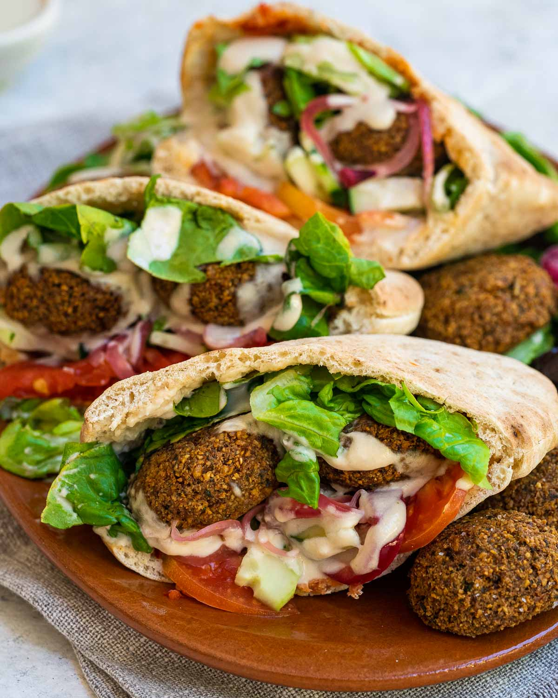

Falafel Page

best food at 7AM, let's get into it!
Ingredients:
- 2 cups dried chickpeas (Do NOT use canned or cooked chickpeas)
- ½ tsp baking soda
- 1 cup fresh parsley leaves, stems removed
- ¾ cup fresh cilantro leaves, stems removed
- ½ cup fresh dill, stems removed
- 1 small onion, quartered
- 7-8 garlic cloves, peeled
- Salt to taste
- 1 tbsp ground black pepper
- 1 tbsp ground cumin
- 1 tbsp ground coriander
- 1 tsp cayenne pepper, optional
- 1 tsp baking powder
- 2 tbsp toasted sesame seeds
Oil for frying
-
Instructions:
- (One day in advance) Place the dried chickpeas and baking soda in a large bowl filled with water to cover the chickpeas by at least 2 inches. Soak overnight for 18 hours (longer if the chickpeas are still too hard). When ready, drain the chickpeas completely and pat them dry.
- Add the chickpeas, herbs, onions, garlic and spices to the large bowl of a food processor fitted with a blade. Run the food processor 40 seconds at a time until all is well combined forming a the falafel mixture.
- Transfer the falafel mixture to a container and cover tightly. Refrigerate for at least 1 hour or (up to one night) until ready to cook.
- Just before frying, add the baking powder and sesame seeds to the falafel mixture and stir with a spoon.
- Scoop tablespoo of the falafel mixture and form into patties (½ inch in thickness each). It helps to have wet hands as you form the patties.
- Fill a medium saucepan 3 inches up with oil. Heat the oil on medium-high until it bubbles softly. Cary drop the falafel patties in the oil, let them fry for about 3 to 5 minutes or so until crispy and medium brown on the outside. Avoid crowding the falafel in the saucepan, fry them in batches if necessary.
- Place the fried falafel patties in ander or plate lined with paper towels to drain.
- Serve falafel hot next to other small plates; or assemble the falafel patties in pita bread with tahini or hummus, ar, tomato and cucumbers. Enjoy!
What are you waiting! go on, and have a great Falafel meal